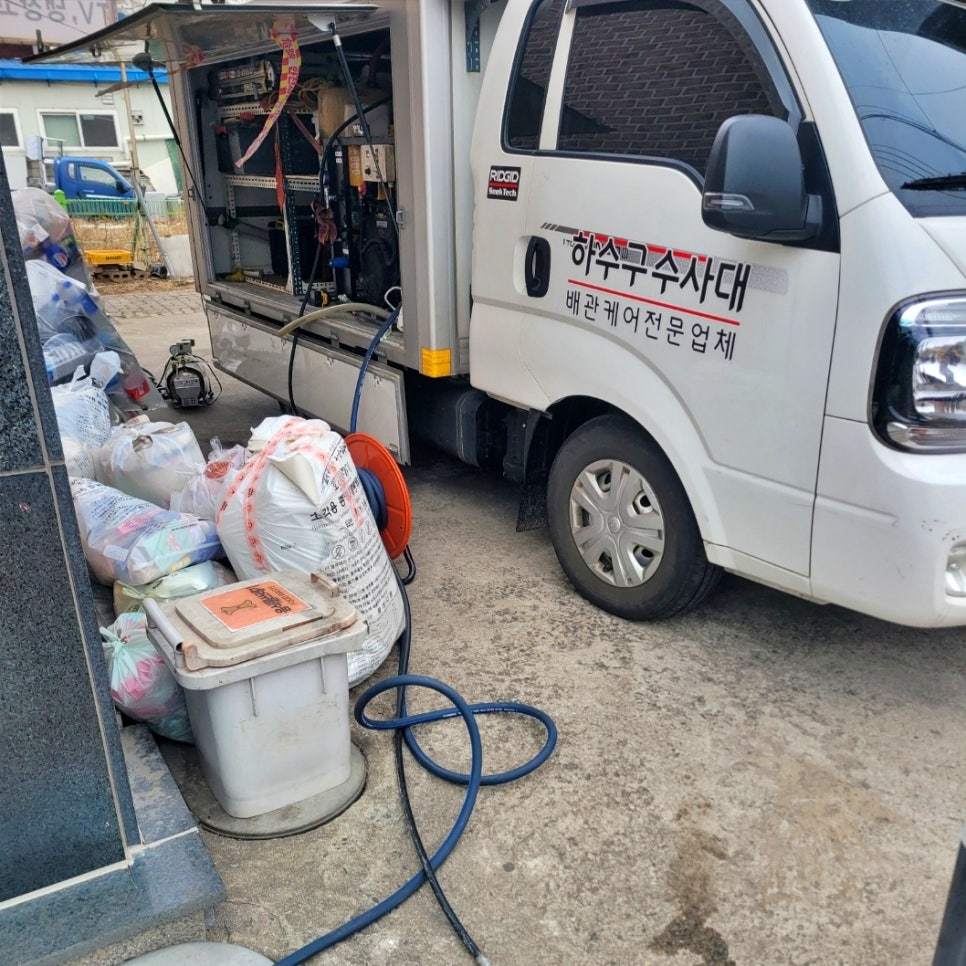
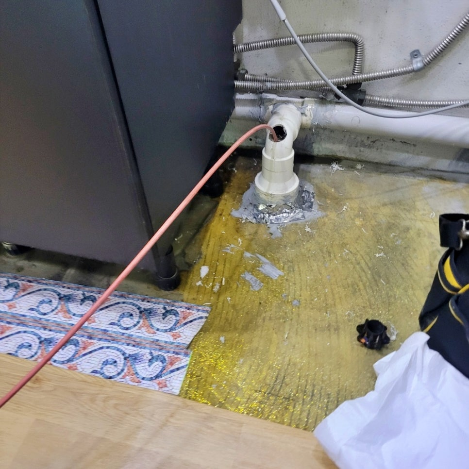
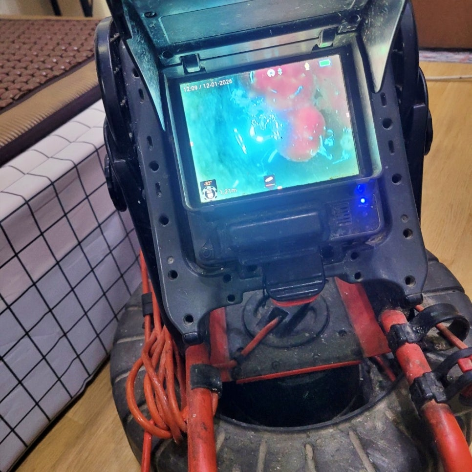
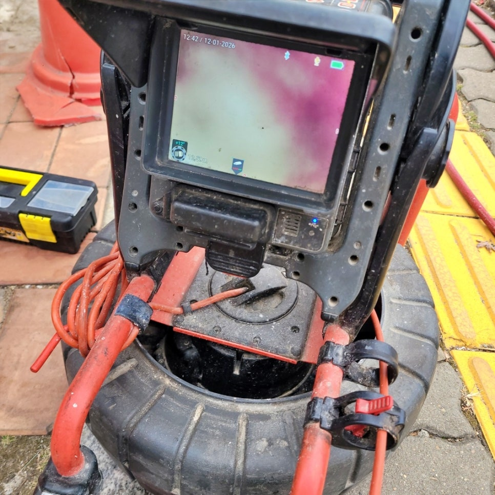
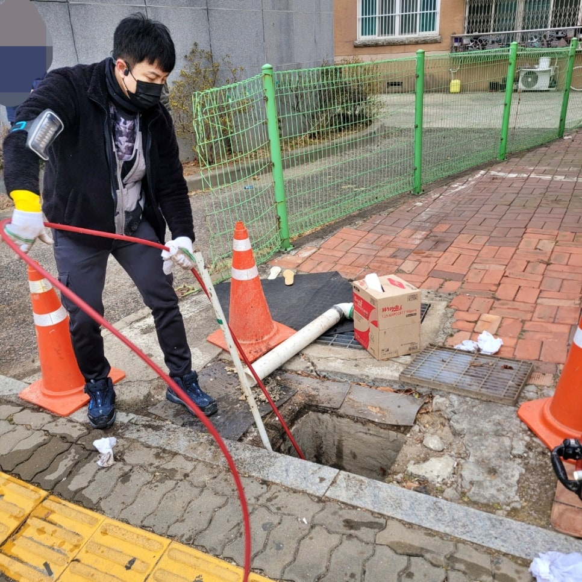
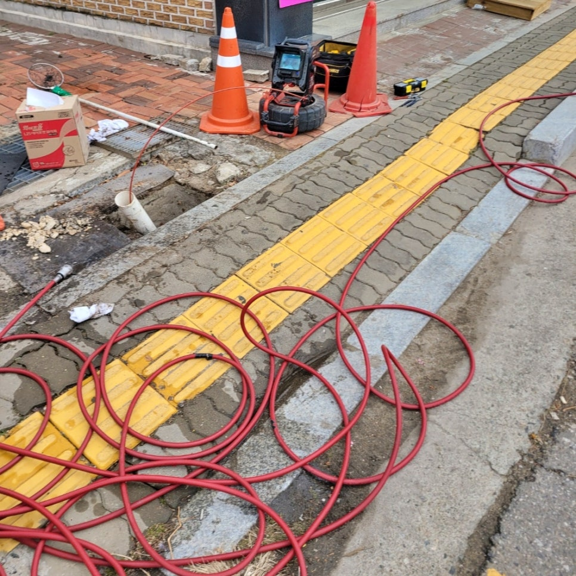

🏠 화성시 남양읍 하수관막힘, 고압세척으로 상가 하수구역류 해결함
화성 남양 하수구막힘 전문 시공 후기

📋 작업 개요
- 위치: 화성 남양, 남양, 화성
- 서비스 유형: 하수구막힘, 배관막힘, 집수정막힘, 역류해결, 뚫는업체, 배관청소, 고압세척
- 작업 일시: 2026. 1. 14. 15:12
- 업체명: 하수구수사대 (010-5615-2118)
🔍 문제 상황
화성시 남양읍 하수관막힘 전문업체,
고압세척 청소로 상가 하수구역류
문제 해결했어요.!!
안녕하세요?
화성시 남양읍 상가 하수관막힘 역류
고압세척전문 하수구수사대입니다.
오늘 저희가 소개할 시공 후기는
얼마 전 남양읍에 위치한 상가 1층에서
하수관막힘으로 역류가 발생해 저희가
출동해 해결한 사례입니다.
남양읍 하수관막힘 현장은 2층 규모로
2층에는 외국인 거주 세대, 아래층은
상가로 운영되고 있었는데요.
이번에 상가 1층 내부에서 배수가 전혀
되지 않은 채 오수가 역류하고 있어서
저희가 고압세척으로 신속하게 해결해
드렸습니다.
그럼 지금부터
하수구역류 문제를 어떻게 해결했는지
전 과정을 자세하게 소개하겠습니다.
오늘의 포스팅 Index
1. 남양읍 하수관막힘 원인을 찾아내다.
2. 고압세척 청소로 기름때 제거 작업
3. 오늘의 시공 후기 맺음말

🔎 원인 분석
💡 전문가 진단: 화성시 남양읍 하수관막힘 전문업체,고압세척 청소로 상가 하수구역류문제 해결했어요.!!
가장 먼저 1층 내부에서 배관 내시경
카메라를 사용해 점검을 진행했는데요.
1차 내시경 카메라 점검 과정
확인 결과, 건물 메인 하수관이 두꺼운
기름때와 슬러지로 완전히 막혀 있는
상태여서 오수가 배수되지 못하고
가장 낮은 1층으로 역류한 것입니다.
외부 2차 내시경 점검 과정
곧바로 외부로 이동해 1차 집수정을
점검했을 때의 상황은 내부와 같이
심각했는데요.
화성시 남양읍 하수관막힘 현장
건물에서 집수정으로 유입되어야 할
물이 전혀 보이지 않았고 내시경상
메인 하수관 출구는 기름 덩어리로
막혀 앞이 보이지 않았습니다.
메인 하수관막힘 고압세척 청소 작업 모습
이번 남양읍 상가 하수구역류 현장은
기름 슬러지가 배관 벽면에 단단하게
고착돼 일반 관통 장비로는 근본적인
해결이 어려웠고요.
관계자분들께 하수관 내부를 시원하게
뚫어줄 수 있는 고압세척의 필요성을
충분히 설명드린 후, 본격적인 작업을
시작했습니다.

🔧 작업 과정
※고압세척 청소 작업과정
첫 번째,
1차 집수정에서 2차 집수정 방향으로
고압세척을 진행해 막힌 구간을 먼저
뚫어주었고요.
두 번째,
건물 내부에서 나오는 메인 하수관
방향으로 고압호스를 삽관시켜
내부를 막고 있던 기름 덩어리들을
강력한 수압으로 파쇄했습니다.
세 번째,
남양읍 하수관막힘 고압세척 과정 중
쏟아져 나온 대량의 기름 덩어리들은
하류에서 2차 막힘을 유발하지 않도록
뜰채로 모두 수거했는데요.
2 시간이 넘는 시간 동안 메인 하수관
막힘 구간에 있던 백색 기름 슬러지들을
고압세척 청소 작업으로 깨끗하게 모두
제거했습니다.
고압세척으로 제거된 기름 덩어리들
지금 화면에 보이는 기름 슬러지들은
남양읍 하수관막힘 고압세척 작업 중에
걷어 올린 것이고요. 실제로는 이보다
훨씬 더 많은 양이 제거되었습니다.
고압세척 후 깨끗해진 메인 하수관 모습
작업 후 상가 내부에서 대량의 물을
흘려보내 배수 테스트를 진행한 결과,
2차 집수정까지 막힘없이 시원하게
물이 흐르는 모습을 내시경 카메라
화면으로 관계자분들께 오랜 시간
확인시켜드렸습니다.
3. 오늘의 시공후기 맺음말.
오늘 소개한
화성시 남양읍 하수관막힘 원인은 외부
집수정으로 나가는 메인 하수구가 모두
막혀서 역류한 것이고요.
고압세척 청소 전문 업체인 저희
하수구수사대가 신속하게 원인을
파악하고 고압세척으로 막힌 곳을
깨끗하게 뚫어드려 해결한 시공


✅ 작업 완료
사례였습니다.
지금 혹시
물이 잘 배수되지 않고 정체되거나
역류가 발생했다면 배관 청소 전문가
하수구수사대를 불러 주십시오.
지금까지
"화성시 남양읍 상가 하수관막힘 역류
고압세척 청소로 해결하다" 포스팅을
정독해 주셔서 감사합니다.
#화성시남양읍상가하수구역류 #화성상가하수관막힘 #화성시하수구업체 #화성시하수구청소업체 #화성고압세척업체 #남양읍고압세척업체 #남양읍하수구업체추천 #남양읍상가하수구막힘




⚠️ 하수구 배관 막힘 예방 및 관리 가이드
- ✅ 머리카락, 비닐, 물티슈 등 물에 분해되지 않는 이물질은 하수구 유입을 절대 금지해 주세요.
- ✅ 하수구 거름망을 씌우고 모여진 이물질은 주기적으로 쓰레기통에 바로 비워주셔야 합니다.
- ✅ 배관 노후가 심할 경우 이물질이 더 쉽게 걸리므로 주기적인 배관 세척(고압세척 등)을 권장합니다.
- ✅ 작업 후 1년 이내 재발 시 하수구수사대에서 무상 A/S 보증 서비스를 제공합니다.
💡 핵심 정리
- 확실한 장비 작업(내시경 점검 및 샤프트 스케일링)으로 원인을 뿌리 뽑습니다.
- 작업 후 1년 이내에 동일한 부위 재발 시 100% 무상 A/S 서비스를 보장합니다.
- 서울 · 경기 · 인천 전 지역에 24시간 언제든 긴급 출동할 수 있도록 항시 대기 중입니다.
❓ 자주 묻는 질문 (FAQ)
🚨 화성 남양 하수구막힘 문제로 고민이신가요?
정확한 원인 진단과 확실한 시공으로 재발 없는 해결을 약속드립니다.
24시간 긴급 출동 | 서울 · 경기 · 인천 전지역 | 1년 내 재발 시 무상 A/S